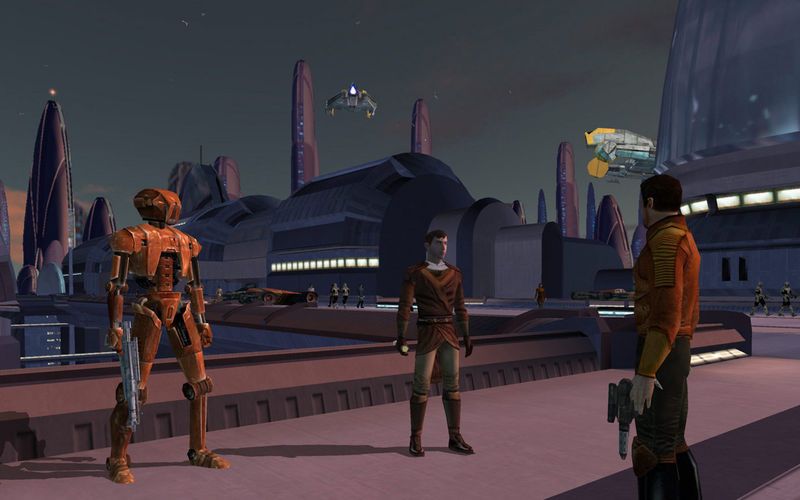

Star Wars Battlefront 2 (2005)
А вот и мой второй крутейший шутер по Звездным войнам. Тут ремарка. Первая часть игры тоже отменная, но вторая стала идеальным сиквелом, более доработанным и расширяющим то, что нам до этого показала первая часть. В плане масштаба это была отличная многопользовательская игра с летающими кораблями, различными временными сценариями разных периодов Звездных войн и целая куча персонажей. В Battlefront 2 интересно как играть, так и переигрывать. И серьезно, в этой игре больше разнообразия и оригинальности чем в современном Star Wars Battlefront 2. Да и к тому же она без микроплатежей.
Star Wars: Knights of The Old Republic
Думаю, многие согласятся, что Kotor был одной из лучших [если не самой лучшей] игрой по Star Wars. Ведь нет более подходящего способа передать весь космический масштаб данной саги и погрузить в лор, чем сюжетно ориентированная РПГ. Эта была та самая игра от BioWare, которую мы все любили. В ней хорошие персонажи и квесты, много локаций для исследования, отлаженная внутриигровая экономика, а также полноценная механика морали, позволяющая выбирать как темную, так и светлую сторону силы.
Knights of The Old Republic стала тем, что вдохновило студию на новые свершения и в будущем мы получили Mass Effect. Отдельно стоит отметить сюжет, который рассказывал о далеком прошлом Республики до того, что мы видели в фильмах и других играх, а произошедшее с Реваном и Малаком хоть и не является каноном, останется в нашей памяти надолго. И греет душу, что сиквел тоже не разочаровал, даже с тем учетом, что его делала другая студия.